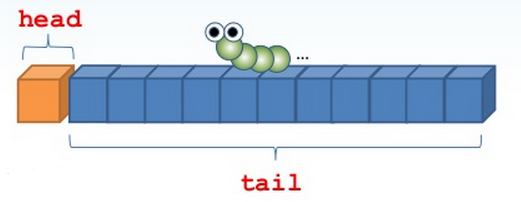

我們大多熟悉物件導向程式設計，熟悉抽象資料型態（Abstract data type, ADT）。抽象資料型態的模型中封裝了資料結構與實作，僅透露互動時的公開介面；然而，代數資料型態（Algebraic data type）相對地曝露了基本的資料結構及規律性，在函數式程式設計的領域中，代數資料型態是基本元素。
（ADT 廣泛應用為 Abstract Data Type 的縮寫，在函數式程式設計中並不使用這個縮寫，因此英文中都直接使用 Abstract Data Type 作為全名。）
Java 是物件導向程式語言，對代數資料型態沒有直接的支援，有兩種方式可以模擬該型態。由於代數資料型態會曝露基本的資料結構，因而可使用具公開值域（Field）的類別來模擬代數資料型態，不過，許多物件導向原則並不鼓勵公開值域，如此一來就得尋找其他方式來模擬。因為代數資料型態會曝露規律性，規律性這聽起來像個行為表現，在 Java 中討論行為時，通常會使用
interface 加以定義。以清單類型為例，我們知道 Java SE API 中定義了
java.util.List，而這個 List 是抽象資料型態。如果想要以代數資料型態的模型來定義清單該怎麼做？在函數式程式設計中，清單會是由首（head）元素與尾（tail）清單組成。若想使用 interface 來定義（或模擬）這樣的清單則會是：
public interface List<T> {
T head();
List<T> tail();
}public class AlgebraicType {
private static List<? extends Object> Nil = new List<Object>() {
public Object head() {
return null;
}
public List<Object> tail() {
return null;
}
public String toString() {
return "[]";
}
};
@SuppressWarnings("unchecked")
public static <T> List<T> nil() {
return (List<T>) Nil;
}
}static 的 nil 方法來傳回空清單，有了空清單的定義之後，接下來就可以定義具單一元素的清單，為具有首元素及尾清單 Nil 的組合。  如果有個清單
如果有個清單 xs，打算在其前頭放個元素 x，新清單就是將 x 當作首元素而 xs 作為尾元素而得來。  為了方便，我們來定義一個 {kind=link}
static 的 con 方法，用以建立新清單。
public class AlgebraicType {
...
public static <T> List<T> cons(final T x, final List<T> xs) {
return new List<T>() {
private T head;
private List<T> tail;
{ this.head = x; this.tail = xs; }
public T head(){ return this.head; }
public List<T> tail() { return this.tail; }
public String toString() { return head() + ":" + tail(); }
};
}
}nil 與 con 方法，具有單一元素的清單，就可以使用以下的程式碼來建立：
cons(1, nil()); // 1:[]cons(2, cons(1, nil())); // 2:1:[]cons(3, cons(2, cons(1, nil()))); // 3:2:1:[]list 方法，使用傳入的不定長度引數建立新清單並傳品。
public class AlgebraicType {
…
@SafeVarargs
public static <T> List<T> list(T... elems) {
if(elems.length == 0) return nil();
T[] remain = Arrays.copyOfRange(elems, 1, elems.length);
return cons(elems[0], list(remain));
}
}list(1, 2, 3, 4); // 1:2:3:4:[]List 是代數資料型態，它易於分解，也就是說，任何清單值都可以用兩種方式來建立，一個可能的值就是空清單 Nil，其它的清單值就僅僅是由首元素與尾清單建構而來，這也就是我一開始談到的，代數資料結構會曝露基本資料結構及規徑性。那麼，為什麼代數資料型態適用於分而治之（Divide-and-conquer）的場合？以這邊的
list 方法為例，它將問題分解為兩個子問題。一個子問題是，呼叫 list 時不給任何引數，此時，list 方法只會傳回空清單。另一個子問題是，呼叫 list 時給定一個或多個引數，解決方案是，使用第一個引數作為首元素，而剩餘的引數作為尾清單的話，就可以使用 con 來建立包括所有給定引數的清單。這就又有一個問題了，怎麼用剩餘引數作為尾清單？可以遞迴地用剩餘引數來呼叫
list 方法。正如 Java 開發者的函數式程式設計（1） 中提到的，在將問題分解之後，遞迴僅僅也經常是自然的呈現形式，將代數資料型態與遞迴結合，就會成為分解問題時一個非常有用的方式。